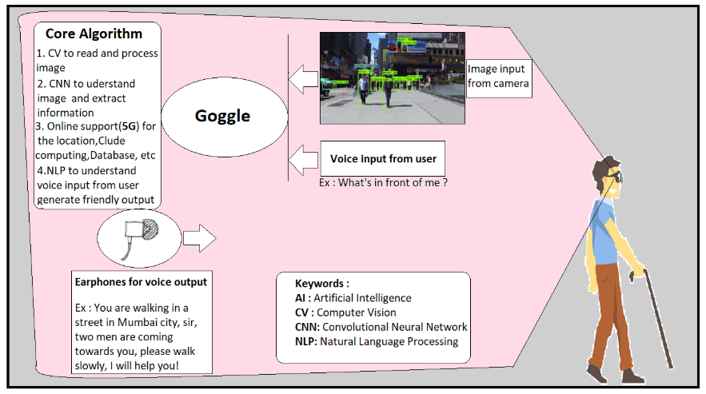

The Intelligent Goggle
From the above diagram consider a situation when a blind man walking on a street, during the process the goggle will take the real-time image from the front camera and process the image using the advanced image processing technology and extract the information from the image. This information is then used to solve user queries. The main processing unit will take information from three sources: image, voice, and internet. Based on this the processor will generate the proper response which will be fed to the user in the form of voice through the earphones.
The proposed technical solution explains how and why the product is efficient, user-friendly,user-adaptive (artificial intelligence) and fast with the minimum requirement of hardware (Thanks to 5G ). We have used the perfect combination of deep learning methods (such as advanced Image Processing and Natural Language Processing ) and real-time cloud computing. In this whole solution, 5G technology plays an important role because most of the processing is done on the internet cloud and to establish a good, fast and reliable connection between system hardware and the internet 5G is the key.